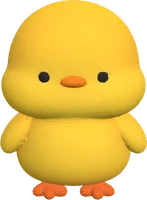

ピヨちゃんの考える教室
考える道を、
いっしょに。
ピヨちゃんと絵本の道を歩きながら、手がかりを整理したり、条件をたしかめたりする教室です。子どもも大人も、自分のペースで楽しめます。
絵本の進め方
- まなびタウンの「ひらめき パズル」から「ピヨちゃんの考える教室」をひらきます。
- 「つづきから考える」か、ピヨちゃんがいるマスを押します。
- 問題を読んで、答えを1つ選びます。困ったらヒントを2段階で見られます。
- 答え合わせで、解説と「考え方の整理」を読みます。
- 考え方に納得したら「わかった、1マス進む」。通ったマスにチェックとお花が残ります。
まちがえても、ヒントを見ても、解説で考え直したら進めます。速さを競う時間制限や、ポイントの加算はありません。
毎日は、3問を目安に
3問で「今日の3問、できたね！」と表示されます。もっと取り組むことも、途中で終わることもできます。休んだ日があっても、進んだマスはもどりません。
むずかしさを選ぶ
絵本の下の「やさしく始める」「手ごたえから始める」で選べます。章が進むと条件や考え方が複雑になります。変えても、これまでの足あとは消えません。
足あとを読み返す
通ったマスか「足あとを見る」を押すと、そのときの問題・答え・解説・ヒントを使った数が見られます。「同じ問題を、もう一度考える」で復習もできます。
全36マスが終わったら「新しい手がかりで練習」へ。練習してきた日もしるしとして残ります。練習の詳しい問題記録は最近120回までです。
記録について
足あとは、まなびタウンで選んでいる人ごとに保存されます。保存できないときは案内が出るので、画面を閉じずにもう一度ためしてください。ブラウザのサイトデータを消すと、この端末の記録も消えます。